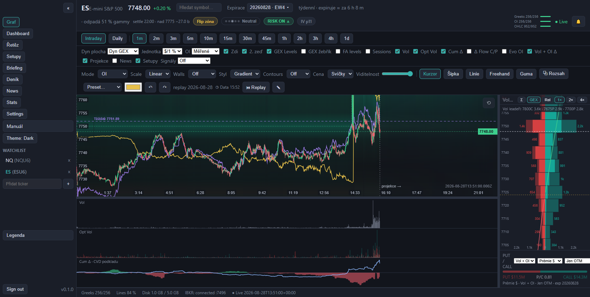
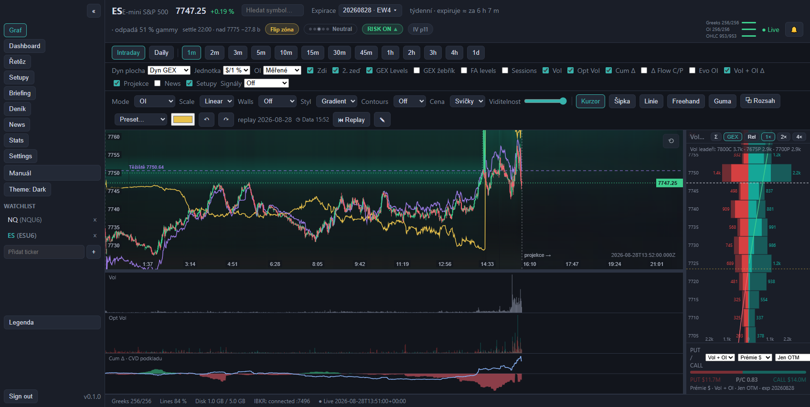
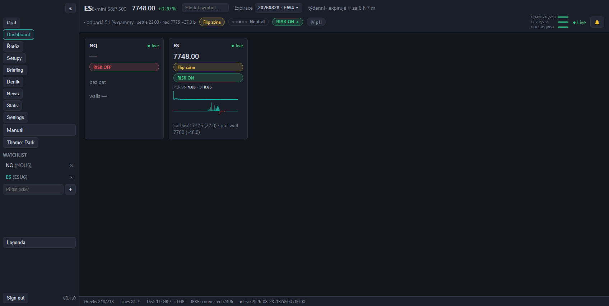
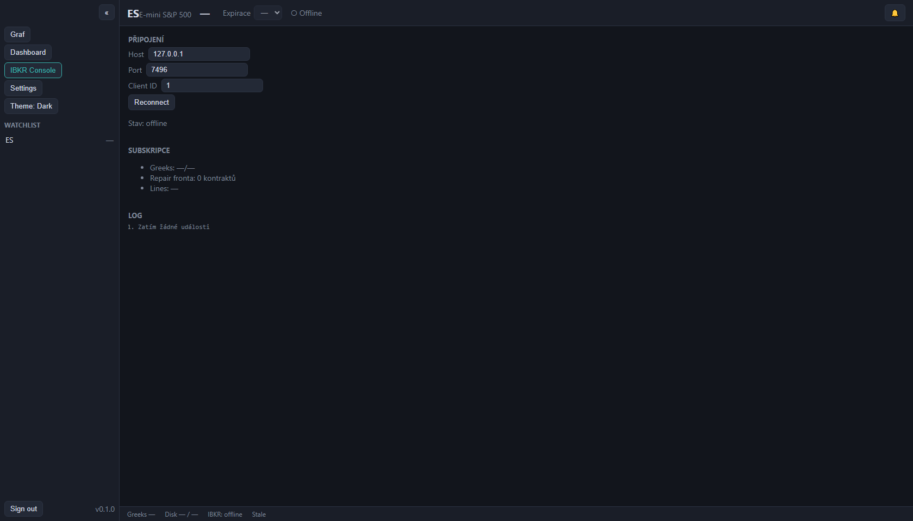
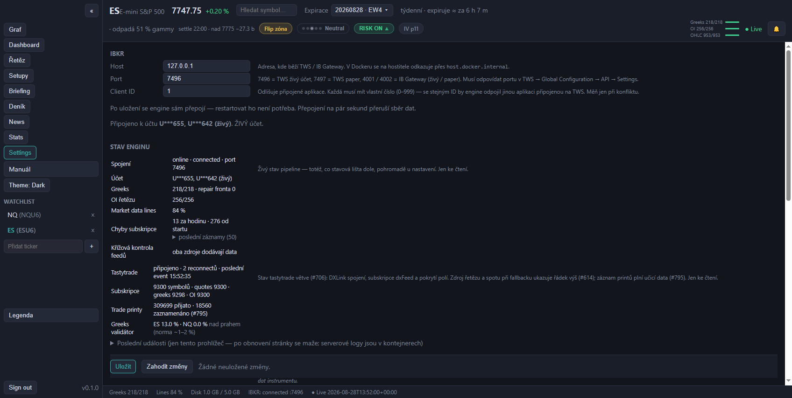
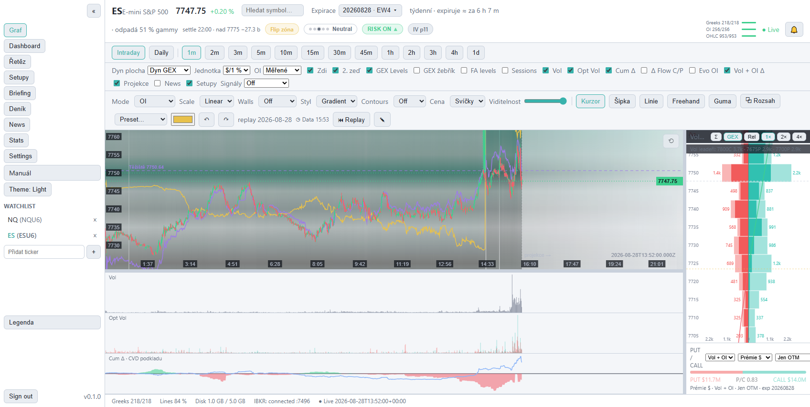
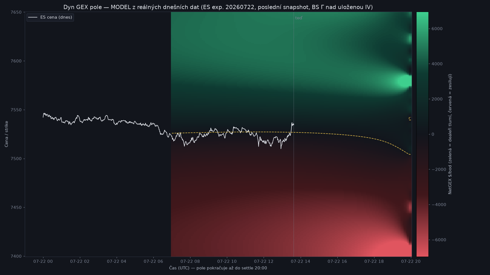

# GEXLens — Uživatelský manuál
Verze 1.3 · červenec 2026 · pro aplikaci GEXLens v0.1
GEXLens je aplikace pro intradenní tradery futures opcí (ES, NQ a další CME podklady). Vizualizuje opční positioning — kde sedí koncentrace open interestu a volume, kde je zero-gamma flip, kde jsou call/put walls a Max Pain — a jak se to všechno vyvíjí v čase. Jediným zdrojem dat je tvůj účet u Interactive Brokers (TWS/IB Gateway API); žádná data neodcházejí mimo tvůj počítač.

Kompletní checklist je v GitHub issue #1 — Setup uživatelského prostředí. Stručně:
127.0.0.1⚠️ Jedno přihlášení na username: když se stejným IBKR loginem přihlásíš jinde (mobil, druhé PC), TWS na tomto počítači spadne a aplikace ztratí data. Po návratu se stačí v TWS znovu přihlásit — aplikace se připojí sama.
Poklepej na ikonu GEXLens na ploše. Skript spustí všechny služby na pozadí a otevře prohlížeč na adrese aplikace. První start po vypnutí počítače trvá ~30–60 s.
cd "D:\Documents\Visual Studio Code\GEX"
docker compose up -d # start na pozadí
# prohlížeč: http://127.0.0.1:8080
docker compose stop # zastaví služby (data zůstávají)
Aplikaci můžeš nechat běžet trvale — engine sbírá data, jen když běží a je přihlášené TWS; mimo seance prostě čeká.
IBKR: connected a začnou přibývat dataObrazovka se skládá z (shora dolů, zleva doprava):
| Prvek | Popis |
|---|---|
| Sidebar (vlevo) | Přepínání obrazovek (Graf / Dashboard / IBKR Console / Settings), přepínač tématu Dark/Light, editovatelný watchlist (kliknutí na ticker přepne instrument, × odebere, políčko dole přidá nový), verze. Tlačítkem « se sbalí. |
| Hlavička | Ticker a název instrumentu, poslední cena + denní změna v %, selektor expirace s typem (denní/týdenní/měsíční/kvartální/EOM) a odpočtem „expiruje ≈ za X h" — velké expirace nesou velké OI. V selektoru najdeš i následující expiraci (sbírá se souběžně — čtení positioningu příští seance). Indikátor ● Live / ○ Offline, zvonek notifikací. |
| Řádek timeframe | Intraday/Daily a rozlišení 1m, 2m, 3m, 5m, 10m, 15m, 30m, 45m, 1h, 2h, 3h, 4h, 1d. Intraday agreguje minutová data do zvolených košů (svíčky OHLC, objemy se sčítají); Daily zobrazí sloupec za každý uložený den (roste s historií, max 14 dní). |
| Řádek přepínačů | Checkboxy vrstev: Zdi (call/put wall linie; dřív se jmenoval „Dyn GEX" — název teď patří heatmap módu), GEX Levels (flip/centroid/Max Pain), Sessions (automatické markery světových seancí), Vol / Opt Vol / Delta / Δ Flow C/P (spodní panely), Vol + OI Δ, Projekce, News. Co odškrtneš, zmizí — layout se přeskládá. |
| Lišta grafu | Mode (7 metrik heatmapy), Scale (Linear/√/Log/Pow⅓), Walls (Off/Peak/Center/Smooth/Flip/Ridge), Styl (Gradient/Blobs), Contours (Off/Major/All), Cena (Svíčky/Křivka) + Viditelnost, nástroje anotací + barva, indikátor zdroje dat, tlačítko ⏮ Replay. |
| Heatmapa | Hlavní plocha — viz kapitola 5. |
| Strike profil | Pravý panel; předěl mezi grafem a panelem jde táhnout (kurzor ↔) — viz kapitola 7. |
| Spodní panely | Vol / Opt Vol / Δ Flow / Cum Δ — viz kapitola 8. |
| Playback lišta | Defaultně skrytá (aplikace jede vždy live) — zobrazí ji tlačítko ⏮ Replay; viz kapitola 9. |
| Stavová lišta | Zdraví datové pipeline — viz kapitola 15. |
Heatmapa zobrazuje matici čas (osa X) × strike (osa Y). Každá buňka je jedna minuta jednoho striku; intenzita barvy odpovídá hodnotě zvolené metriky. Teal/zelená = call strana, červená = put strana.
| Akce | Efekt |
|---|---|
| Kolečko nad plochou | Zoom obou os ukotvený ke kurzoru (bod pod myší zůstává na místě) |
| Kolečko nad pruhem osy | Zoom jen dané osy (levý okraj = osa strikes, spodní okraj = osa času) |
| Tažení za pruh osy Y (levý okraj) | Roztahování/stahování cenové osy — zvětší/zmenší svíčky svisle |
| Tažení / kolečko na pravém panelu (profil) | Ovládá stejnou cenovou osu Y jako levý okraj — táhni svisle nebo kolečkuj přímo nad profilem (kurzor ↕) |
| Tažení za pruh osy X (spodní okraj) | Roztahování/stahování časové osy — zvětší/zmenší svíčky vodorovně (kotva u pravého okraje: poslední svíčka drží pozici) |
| Tažení v ploše | Posun (pan) |
| Dvojklik nebo tlačítko ⟲ (pravý horní roh) | Reset zobrazení na výchozí pohled |
| Pohyb myší | Crosshair — svislá linka snapnutá na svíčku, vodorovná sleduje kurzor; synchronizovaný se strike profilem i spodními panely + tooltip buňky (minuta, strike, hodnoty call/put) |
Crosshair navíc ukazuje osové štítky jako TradingView: dole na ose X datum + čas pod svislou linkou, vpravo na ose Y cenu na úrovni kurzoru. Cena je zaokrouhlená na minimální tick instrumentu (ES/NQ = 0,25) — mezi 7530,00 a 7530,25 tedy nic není. Crosshair zůstává viditelný i mimo svíce — když posuneš graf a jedeš myší přes prázdnou/budoucí plochu, nezmizí.
Pohled se nesmýká sám. Graf se automaticky napasuje (fit na cenové pásmo + ukotvení historie) jen při změně datasetu — jiný symbol, expirace, timeframe nebo den. Resize pravého panelu, živý přírůstek minut ani úprava os tvůj pan/zoom nepřepíšou. Kdykoli se vrátíš na napasovaný pohled dvojklikem nebo tlačítkem ⟲.
Spodní panely (Vol / Opt Vol / Cum Δ) sledují časovou osu heatmapy — při posunu či zoomu osy X se roztahují synchronně.
Select Mode přepíná, co buňky zobrazují (přepočet je okamžitý, bez čekání na server; dostupné nad živými/replay daty):
| Mode | Co ukazuje |
|---|---|
| OI | Open interest per strike (výchozí). Dokud ranní OI nedorazí, automaticky se použije volume. |
| Vol OTM | Volume jen OTM opcí (call nad spotem, put pod spotem) — čerstvá spekulace/zajištění |
| Vol ITM | Volume ITM opcí |
| Vol ± | Rozdíl call − put volume (zeleno-červená divergenční mapa) |
| OI+OTM | Vážená kombinace OI (60 %) a OTM volume (40 %) — „kde sedí i kde se dnes hraje" |
| OI−ITM | OI očištěné o ITM volume |
| OI±All | Rozdíl call − put OI (divergenční) |
| Dyn GEX | Modelované pole NetGEX (zelená = dealeři tlumí, červená = zesilují) přes celé pásmo a celý den — vlevo od předělu naměřená historie, vpravo modelovaná budoucnost do settle. Jak ho číst a obchodovat: kapitola 18. |
Select Scale mění škálu hodnot: Linear, √ (zvýrazní slabší), Log, Pow⅓. Znaménko se zachovává.
Select Walls kreslí bílé čárkované linie počítané z právě zobrazené vrstvy:
Bílé přerušované vrstevnice nad vyhlazeným polem:
| Linie | Barva | Zapíná |
|---|---|---|
| Flip (zero-gamma) | žlutá | GEX Levels |
| Centroid (HVL) | fialová | GEX Levels |
| Max Pain | magenta | GEX Levels (počítá se z OI) |
| Call wall | zelená | Zdi |
| Put wall | červená | Zdi |
| Walls módy | bílé čárkované | select Walls |
| Sessions markery | šedé svislé (Tokio, Londýn, US Open…) | Sessions |
| Cenová vrstva | zelená/červená | vždy (viz kap. 6) |
Každá úroveň se navíc promítá jako horizontální čárkovaná linka přes celou šířku s barevnou cenovkou u levého okraje (poslední známá hodnota) — na první pohled vidíš, kde úrovně právě leží. Vpravo na ose je štítek aktuální ceny; v pravém dolním rohu timestamp posledních dat.
Pokud se některý strike nepodařilo obnovit (výpadek dat), jeho buňky jsou vyšedlé s nižší sytostí — poznáš tak stará data od živých. Souhrn běží ve stavové liště (Repair: retrying N…).
V liště grafu volbou Cena:
Graf se při načtení automaticky napasuje na cenové pásmo dne (svíčky vyplní výšku); okolní zóny heatmapy dosáhneš tažením/kolečkem za osu Y, reset vrací napasovaný pohled. Po startu s málem dat (ráno) mají svíčky fixní šířku ukotvenou k pravému okraji — neroztahují se přes celý graf jako dřív.
Posuvníkem Viditelnost (10–100 %) cenovou vrstvu zeslabíš, aby nepřebíjela heatmapu pod ní — užitečné hlavně u svíček. Štítek aktuální ceny zůstává vždy plně viditelný.

Horizontální skládané pruhy pro každý strike, na stejné výškové ose jako heatmapa — strike v profilu je vždy na stejné úrovni obrazovky jako v grafu a při zoomu/posunu osy Y se hýbou synchronně:
Čteš z něj na první pohled, kde sedí dominantní call a put koncentrace — typicky walls.
Proč večer „zmizí" jedna strana pruhů? Pruhy jsou Δ-vážené — násobí se deltou opce (kolik futures dealer na kontrakt reálně drží). Ke konci seance se delta polarizuje (viz gamma crunch, kap. 18): OTM opce mají deltu skoro 0, ITM skoro 1. Nad spotem proto zbývají hlavně červené (ITM puty) a pod spotem zelené (ITM cally). Není to chyba — surové OI/Vol obou stran pořád vidíš v tooltipu řádku; zapnutím Σ se přimíchá zítřejší expirace s měkčími deltami a obě strany se zase objeví.
Tři panely se sdílenou časovou osou s heatmapou. Každý zvlášť vypneš checkboxem v horní liště (Vol / Opt Vol / Delta).
| Panel | Co ukazuje |
|---|---|
| Vol | Minutový objem podkladu (futures) — šedé sloupce |
| Opt Vol | Minutový objem opcí, barevně call (teal) / put (červená) vedle sebe |
| Δ Flow C/P | Delta-vážený opční tok zvlášť za call a put stranu (|Δ| × přírůstek volume). Z něj čteš, na které straně se právě obchoduje — např. „uzavírání callů" = call sloupce slábnou. Default vypnutý (checkbox Δ Flow C/P). |
| Cum Δ | Kumulativní delta flow jako plocha nad nulou (zelená) / pod nulou (červená). Roste = agresivní kupci call delty / prodejci put delty; klesá = opačně. Počítá se s plnou klasifikací agresora (tick-by-tick v hot zóně, midpoint test jinde) a resetuje se na začátku dne. |
Pohyb myší v kterémkoli panelu hýbe crosshairem ve všech panelech i heatmapě. Při najetí navíc uvidíš hodnoty ukazatele:
Aplikace defaultně jede vždy live — replay lišta je skrytá, aby nerušila. Zobrazíš ji tlačítkem ⏮ Replay v liště grafu:
Celý den je po načtení v paměti — přetáčení je okamžité, bez čekání na server. Při přepnutí timeframe zůstává live pozice live a rozehraný replay se přemapuje proporcionálně.
V liště grafu vyber nástroj:
| Nástroj | Použití |
|---|---|
| Kurzor | Běžný režim (pan/zoom/crosshair) |
| Šipka | Táhni od–do; šipka s hlavičkou |
| Linie | Táhni od–do; rovná čára |
| Freehand | Kresli od ruky |
| Guma | Klikni poblíž anotace — smaže ji |
Vedle nástrojů je výběr barvy. Anotace jsou ukotvené k času a striku (ne k pixelům) — drží na svém místě při zoomu, panu i přetáčení, přežijí restart aplikace a jsou uložené zvlášť pro každý instrument a den.
Karty instrumentů z watchlistu: aktuální cena, stav dat (● live / offline), mini NetGEX profil (zelené/červené sloupečky = čistý positioning po stricích) a vzdálenosti k call/put wall. Slouží jako rychlý přehled, když sleduješ víc instrumentů.

Diagnostická obrazovka:
Sem se podívej jako první, když něco nevypadá dobře.

Změny se ukládají okamžitě (bez tlačítka Uložit) a engine si je průběžně přebírá:
| Sekce | Položky |
|---|---|
| IBKR | Host, port (7496 live / 7497 paper), client ID |
| Engine | Rozsah strikes (± body od spotu) — engine si změnu přebere do 5 minut za běhu a rozšíří sbírané pásmo (max 400; vidět vzdálená křídla à la pojistky hluboko OTM), velikost dávky subskripcí, šířka hot zóny, retence dat (dny), disk limit (GB) |
| Vzhled | Téma Dark/Light (přepne se ihned), jazyk |
| Seance | Historické pole (JSON) — markery seancí se nově generují automaticky z časů světových burz; checkbox Sessions v grafu |

Light téma:

Zvonek v hlavičce ukazuje badge s počtem nepřečtených alertů; kliknutím otevřeš historii (otevření badge vynuluje). Alerty chodí i za běhu do IBKR Console logu.
Zvonek je globální — sbírá alerty napříč všemi instrumenty ve watchlistu, ne jen z toho na grafu. Proto je u každého alertu datum + čas notifikace a symbol instrumentu (např. [NQ · setup]). Naproti tomu karty a linie setupů přímo v grafu jsou jen pro instrument, který máš zobrazený.
Druhy alertů:
| Alert | Kdy |
|---|---|
| Cena × úroveň | Cena protne flip nebo wall |
| Cum Δ skok | Skok kumulativní delty o nastavený práh |
| Dominantní strike | Změna striku s největší koncentrací |
| Výpadek spojení | TWS/Gateway nedostupné |
| Disk limit | Překročen limit místa na disku |
| OI nedorazilo | IBKR nedodalo Open Interest — GEX vrstvy jedou dočasně z volume (viz Řešení potíží) |
| Instrument nejde spustit | Ticker z watchlistu není futures s opčním řetězem (např. akcie) — engine to zkusí znovu za 30 minut |
| Obálka na stropu | Pásmo strikes dosáhlo maxima šířky — vzdálený okraj se posouvá za cenou |
| Svíčky se přestaly kreslit | Real-time bary z TWS nechodí, ale cena žije (mrtvé TWS farmy po noční přestávce) — pomáhá restart TWS; díra se po návratu doplní sama |
| Svíčky zase jedou | Bary se vrátily — díra ve svíčkách se doplní backfillem |
| Vol koncentrace | Jedna strana (strike × C/P) příští expirace výrazně převyšuje zbytek (≥ 3× medián top 10) — úroveň, kde se trh zajišťuje na zítřek (put pod trhem pojistka/magnet, call nad trhem strop) |
| Nový setup | Detektor našel obchodní setup (odraz od zdi / neúspěšný průraz / Max Pain pin / gamma momentum) |
Když detektor najde setup, přijde alert Nový setup a nad grafem se ukáže karta setupu pro daný instrument: směr (LONG/SHORT), šablona, datum a čas vzniku (kdy se splnily podmínky), úrovně Entry / Cíl / Stop, RRR a důvěra, plus krátké zdůvodnění. Stejné úrovně se kreslí jako linie přímo v heatmapě. Kartu skryješ křížkem (setup dál běží). Historii, úspěšnost a hodnocení 👍/👎 najdeš na obrazovce Setupy v sidebaru.
| Údaj | Význam | V pořádku |
|---|---|---|
Greeks X/Y |
Kolik kontraktů řetězce má kompletní data (bid/ask/volume/Greeks) | X = Y |
Repair: retrying N… |
Kontrakty čekající na opakované načtení | Nezobrazuje se, nebo malé N |
Lines NN % |
Vytížení market data lines účtu | < 100 % |
Disk X / Y |
Obsazení disku daty / limit | X < Y |
IBKR: connected :7496 |
Stav spojení + port | connected |
● Live HH:MM / Stale |
Čas posledních dat | ● Live, čas se hýbe |
Aplikaci lze otevřít rovnou v konkrétním stavu pomocí URL parametrů:
http://127.0.0.1:8080/?view=dashboard # obrazovka: chart | dashboard | console | settings
http://127.0.0.1:8080/?theme=light # téma
http://127.0.0.1:8080/?price=line&opacity=60 # cenová křivka s viditelností 60 % (default jsou svíčky)
Parametry lze kombinovat.
| Příznak | Příčina a řešení |
|---|---|
Stavová lišta IBKR: offline |
TWS neběží / není přihlášené / vypnuté API / špatný port. Zkontroluj TWS, pak IBKR Console → Reconnect. |
| Alert „delayed market data“ | Chybí live subskripce CME v Client Portal (viz kap. 2). |
Stale místo ● Live |
Data se přestala hýbat — obvykle výpadek TWS↔IB (v TWS bývá hláška o connectivity). Vyřeší se samo, případně re-login TWS. |
| Lišta grafu ukazuje „demo data“ | Aplikace se nedostala k API / žádná data pro dnešek. Zkontroluj, že služby běží (docker compose ps) a engine je online. |
| Alert „OI nedorazilo“ | IBKR dodává Open Interest pro ES opce jen jednou denně (ráno, po publikaci CME). Do té doby heatmapa jede z volume a GEX úrovně mohou být ploché. Engine to zkouší každých 30 minut sám — není třeba nic dělat. |
| Prázdná heatmapa | Mimo obchodní hodiny nevznikají nové snapshoty — použij playback pro přehrání posledního dne. |
| TWS spadlo po přihlášení na mobilu | Limit jednoho přihlášení IBKR. Znovu se přihlas v TWS; aplikace se sama připojí. |
| Aplikace nejde otevřít (:8080) | docker compose up -d v adresáři projektu; první start po rebootu chvíli trvá. |
Tahle kapitola překládá vrstvy aplikace do rozhodnutí: kdy hledat long, kdy short a kdy si sedět na rukách.
Market makeři (dealeři) drží protistranu opcí a průběžně se zajišťují futures:
Klíčové pravidlo: režim neříká směr, říká, KTERÝ TYP obchodu dnes funguje. Zelený režim = obchoduj návraty (fade od hran). Červený režim = obchoduj průrazy (momentum). Nejčastější ztráty = fade v červeném dni, honění breakoutu v zeleném.
Settle = vypořádání expirace: u denních ES/NQ opcí 20:00 UTC (22:00 SELČ, 16:00 New York). V tu chvíli opce zaniknou a jejich gamma z trhu zmizí — model i mapa počítají právě do tohoto okamžiku.
Gamma crunch: gamma opce je největší přesně na striku a čím méně času zbývá, tím je špičatější — ráno široký kopec přes několik strikes, večer úzká jehla na jednom striku. Zajišťovací toky tak mají poslední 1–2 hodiny největší páku: cena se buď přilepí k velkému striku (pin), nebo po proražení prudce akceleruje. V Dyn GEX mapě to vidíš jako stahování barev do tenkých jasných pásů směrem doprava.

V aplikaci jsou dva flipy — obě čáry měří totéž dvěma metodami:
| Kde | Barva | Metoda | |
|---|---|---|---|
| Naměřený flip | hlavní graf | žlutá čárkovaná | průchod nulou kumulativního NetGEX z reálného OI, interpolace mezi striky; driftuje pomalu (hlavní vstup OI se přes den mění málo) |
| Dynamický flip | pravý panel (+ rozhraní barev v Dyn GEX mapě) | žlutá čárkovaná (slabší) | nula Black-Scholes modelu na jemnější mřížce — hladší odhad „teď" |
Rozdíl obou čar ber jako flip ZÓNU. Blízko sebe = ostrá hranice režimů, signály čitelné. Rozjeté = hranice rozmazaná → uvnitř zóny neobchoduj, čekej, až cena opustí celé pásmo.
Pravá (modelovaná) část mapy vychází z aktuálního snímku IV a ranního OI: velký příliv nového OI nebo skok volatility pásy přeskládá; dnešní čerstvý positioning model nevidí. Ber večerní plán z mapy ~hodinu předem a průběžně ověřuj, že pásy stojí. Zdi navíc nejsou stejně silné: cenovka zdi ukazuje dominanci v % (podíl zdi na síle celé strany profilu) a úseky, kde zeď drží méně než 15 % síly strany, se kreslí ztlumeně tečkovaně — slabá zeď je jen statistické maximum, ne opora pro obchod. Vždy křížově potvrď s měřenou vrstvou (walls, GEX Levels, CumΔ) — model je navigace, měření je terén.
| Pojem | Význam |
|---|---|
| GEX (Gamma Exposure) | Odhad, kolik dolarů musí dealeři hedgeovat na 1 bod pohybu podkladu. Kladný = dealeři tlumí pohyb, záporný = zesilují. |
| Flip (zero-gamma) | Cena, kde kumulativní NetGEX prochází nulou — hranice mezi režimem komprese a expanze volatility. |
| Dynamický flip | Modelová verze flipu: nula Dyn GEX křivky (BS model, jemnější mřížka). S naměřeným flipem tvoří flip zónu (kap. 18). |
| Dyn GEX (mód) | Modelované pole NetGEX pro hypotetické ceny přes pásmo a čas — „jakou gammu potká cena na úrovni X v čase T". Zelená tlumí, červená zesiluje. |
| Settle | Vypořádání/konec životnosti expirace — denní ES/NQ opce 20:00 UTC (22:00 SELČ). Pak jejich gamma z trhu zmizí. |
| Gamma crunch | Růst ATM gammy s blížící se expirací — zajišťovací toky mají večer největší sílu (pin, nebo akcelerace). |
| Δ-vážení | Pruhy profilu × delta opce = kolik futures dealer reálně drží. Večer polarizuje (OTM→0, ITM→1), proto strana pruhů „mizí". |
| Call wall / Put wall | Strike s největší koncentrací NetGEX nad/pod spotem. Pravděpodobnostní úroveň, ne bariéra — tržní význam má jen při dostatečné dominanci vůči zbytku profilu (viz cenovka zdi s %); úrovně se během dne přelévají, u 0DTE výrazně. |
| Centroid (HVL) | Vážené těžiště |
| Max Pain | Strike, kde by při expiraci vypršelo nejméně hodnoty opcí — trh k němu v expiracích často „přišpendlí" (pinning). |
| OI (Open Interest) | Počet otevřených kontraktů; mění se jednou denně (CME publikuje ráno). |
| ΔOI vs. včera | Změna OI proti předchozímu dni — kde přes noc vznikly/zanikly pozice. |
| Δ Flow C/P | Delta-vážený opční tok zvlášť za call/put stranu — na které straně se právě obchoduje. |
| Cum Δ | Kumulativní delta flow — součet (směr obchodu × velikost × delta × multiplikátor) přes den. |
| Hot zóna | Pásmo ATM strikes sledované tick-by-tick pro přesnou klasifikaci agresora. |
| Stale | Data starší než 5 minut — vizuálně odlišená. |
GEXLens · dokumentace je součástí repozitáře kEchiCZ/GEX. Technický manuál pro správce a vývojáře: docs/manual/ADMIN-MANUAL.md.